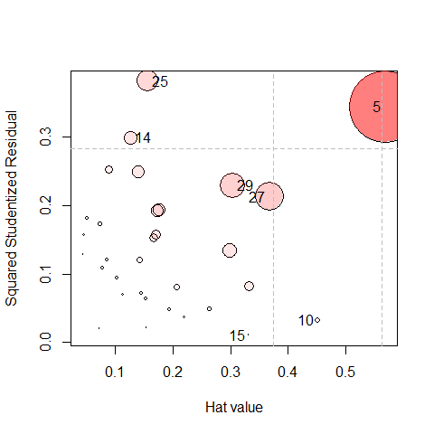
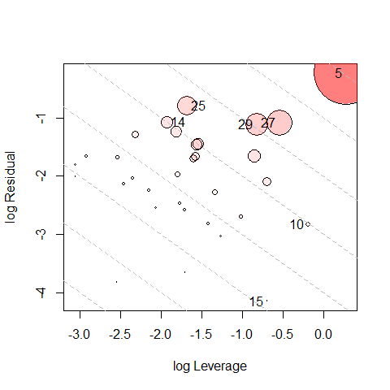
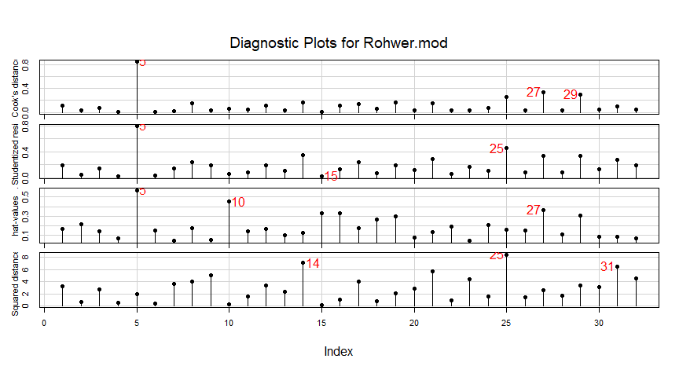

Influence Measures and Diagnostic Plots for Multivariate Linear Models
Version 0.9-0
Functions in this package compute regression deletion diagnostics for multivariate linear models following methods proposed by Barrett & Ling (1992) and provide some associated diagnostic plots. The diagnostic measures include hat-values (leverages), generalized Cook’s distance, and generalized squared ‘studentized’ residuals. Several types of plots to detect influential observations are provided.
In addition, the functions provide diagnostics for deletion of subsets of observations of size m>1. This case is theoretically interesting because sometimes pairs (m=2) of influential observations can mask each other, sometimes they can have joint influence far exceeding their individual effects, as well as other interesting phenomena described by Lawrence (1995). Associated methods for the case m>1 are still under development in this package.
Installation
Get the released CRAN version or this development version:
| CRAN version | install.packages("mvinfluence") |
| Development version | remotes::install_github("friendly/mvinfluence") |
Goals
The design goal for this package is that, as an extension of standard methods for univariate linear models, you should be able to fit a linear model with a multivariate response,
mymlm <- lm( cbind(y1, y2, y3) ~ x1 + x2 + x3, data=mydata)and then get useful diagnostics and plots with:
influence(mymlm)
hatvalues(mymlm)
cooks.distance(mymlm)
influencePlot(mymlm, ...) As is done in comparable univariate functions in the car package, noteworthy points are identified in printed output and graphs.
Examples
The Rohwer data contains data on kindergarten children designed to examine how well performance on a set of paired-associate (PA) tasks can predict performance on some measures of aptitude and achievement (SAT, PPVT and Raven). Here, we fit a MLM to a subset of the Rohwer data (the Low SES group). The default influence plot (type="stres") shows the squared standardized residual against the Hat value. The areas of the circles representing the observations are proportional to generalized Cook’s distances.
data(Rohwer, package="heplots")
Rohwer2 <- subset(Rohwer, subset=group==2)
rownames(Rohwer2)<- 1:nrow(Rohwer2)
Rohwer.mod <- lm(cbind(SAT, PPVT, Raven) ~ n + s + ns + na + ss, data=Rohwer2)
(infl <-influencePlot(Rohwer.mod, id.n=4, type = "stres"))
#> H Q CookD L R
#> 5 0.5682 0.34388 0.84672 1.3160 0.79641
#> 10 0.4516 0.03239 0.06339 0.8235 0.05907
#> 14 0.1265 0.29968 0.16427 0.1448 0.34308
#> 15 0.3325 0.01054 0.01519 0.4981 0.01580
#> 25 0.1571 0.38198 0.26008 0.1864 0.45319
#> 27 0.3673 0.21280 0.33866 0.5804 0.33631
#> 29 0.3043 0.22950 0.30260 0.4373 0.32987The function returns (and prints) a data frame of the influence statistics for the identified points. “Noteworthy” points are those that are unusual on either Hat value (H) or the squared studentized residual (Q), so more points will be shown than the id.n value. It is often more useful to sort these in descending order by one of the influence measures.
infl |> dplyr::arrange(desc(H))
#> H Q CookD L R
#> 5 0.5682 0.34388 0.84672 1.3160 0.79641
#> 10 0.4516 0.03239 0.06339 0.8235 0.05907
#> 27 0.3673 0.21280 0.33866 0.5804 0.33631
#> 15 0.3325 0.01054 0.01519 0.4981 0.01580
#> 29 0.3043 0.22950 0.30260 0.4373 0.32987
#> 25 0.1571 0.38198 0.26008 0.1864 0.45319
#> 14 0.1265 0.29968 0.16427 0.1448 0.34308An alternative (type="LR") plots residual components against leverage components, both on log scales. Because influence is a product of residual × Leverage, this plot had the property that contours of constant Cook’s distance fall on diagonal lines with slope = -1. Each successive dashed line represents a multiple of Cook’s D. This plot is often easier to read than the standard version.
influencePlot(Rohwer.mod, id.n=4, type="LR")
#> H Q CookD L R
#> 5 0.5682 0.34388 0.84672 1.3160 0.79641
#> 10 0.4516 0.03239 0.06339 0.8235 0.05907
#> 14 0.1265 0.29968 0.16427 0.1448 0.34308
#> 15 0.3325 0.01054 0.01519 0.4981 0.01580
#> 25 0.1571 0.38198 0.26008 0.1864 0.45319
#> 27 0.3673 0.21280 0.33866 0.5804 0.33631
#> 29 0.3043 0.22950 0.30260 0.4373 0.32987If you wish to see how the observations fare on each of the the measures (as well as Mahalanobis D2), the inflIndexPlot() function gives you index plots.
infIndexPlot(Rohwer.mod, id.n=3, id.col = "red", id.cex=1.5)
In this example, note that while case 5 stands out as influential, it does not have an exceptionally large squared distance, D2.
Citation
To cite mvinfluence in publications, use:
citation("mvinfluence")
#>
#> To cite package 'mvinfluence' in publications use:
#>
#> Michael Friendly (2018). mvinfluence: Influence Measures and
#> Diagnostic Plots for Multivariate Linear Models. R package version
#> 0.8-3. https://CRAN.R-project.org/package=mvinfluence
#>
#> A BibTeX entry for LaTeX users is
#>
#> @Manual{,
#> title = {mvinfluence: Influence Measures and Diagnostic Plots for Multivariate Linear
#> Models},
#> author = {Michael Friendly},
#> year = {2018},
#> note = {R package version 0.8-3},
#> url = {https://CRAN.R-project.org/package=mvinfluence},
#> }
#>
#> ATTENTION: This citation information has been auto-generated from the
#> package DESCRIPTION file and may need manual editing, see
#> 'help("citation")'.References
Barrett, B. E. and Ling, R. F. (1992). General Classes of Influence Measures for Multivariate Regression. Journal of the American Statistical Association, 87(417), 184-191.
Barrett, B. E. (2003). Understanding Influence in Multivariate Regression. Communications in Statistics – Theory and Methods, 32, 3, 667-680.
Lawrence, A. J. (1995). Deletion Influence and Masking in Regression. Journal of the Royal Statistical Society. Series B (Methodological) , 57, No. 1, pp. 181-189.